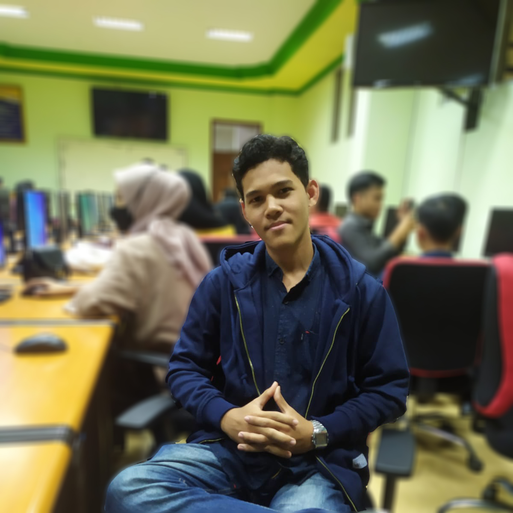
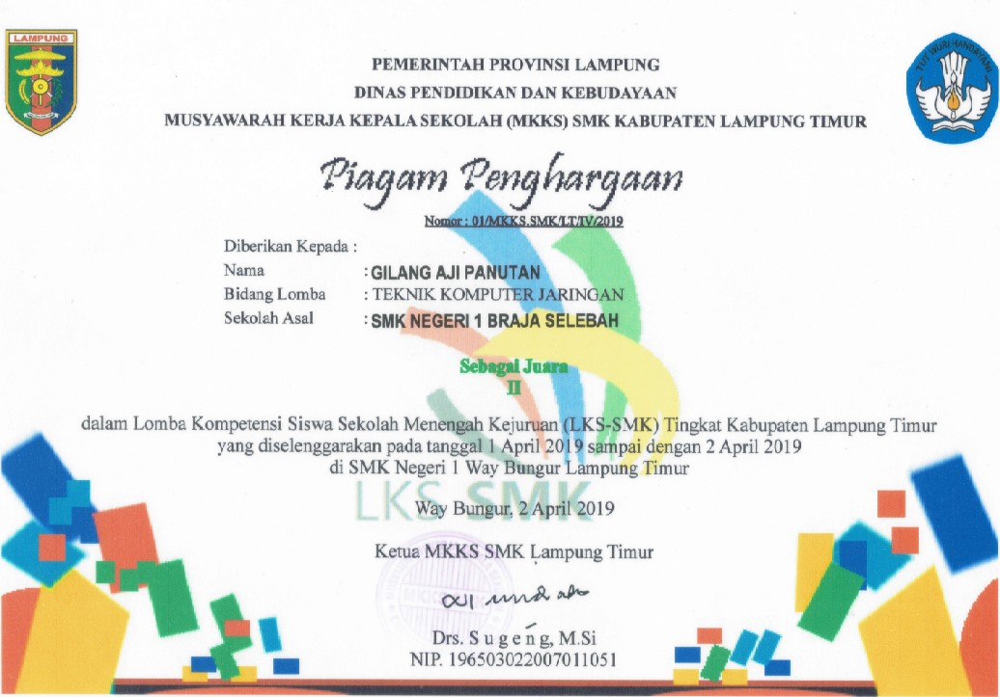
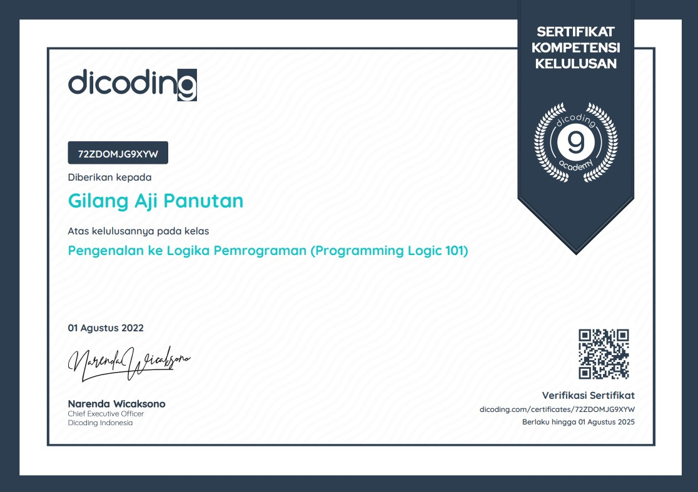
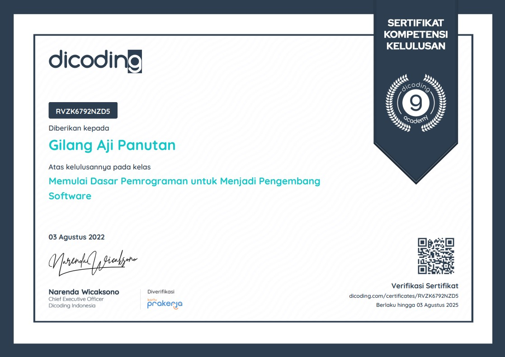
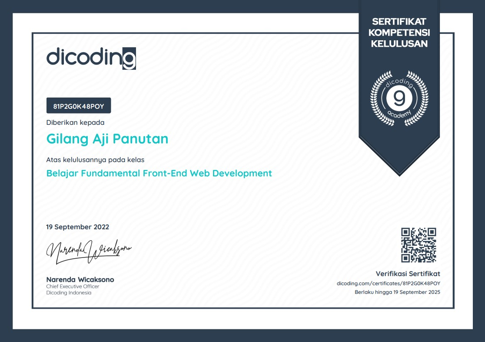

Gilang Aji Panutan
M a h a s i s w a
Tentang Saya
Mahasiswa Universitas Teknokrat Indonesia, Fakultas Teknik dan ilmu Komputer, Jurusan Informatika.
Berusia 20 tahun, mampu bekerja secara tim maupun individu. Rajin dan ramah.
Riwayat Pendidikan
2017 - 2020
SMK Negeri 1 Braja Selebah
Teknik Komputer dan Jaringan
2020 - Sekarang
Universitas Teknokrat Indonesia
Informatika
Pengalaman Magang
2018
LPK FARAFI
Kota Metro
Sertifikat

Juara 2 LKS Tingkat Kabupaten Lampung Timur

Pengenalan Logika Pemrograman

Dasar Menjadi Pengembang Software

Fundamental Front-End Web Development
Kontak
+62 852 6319 3452
Sepang Jaya, Labuhan Ratu, Bandar Lampung